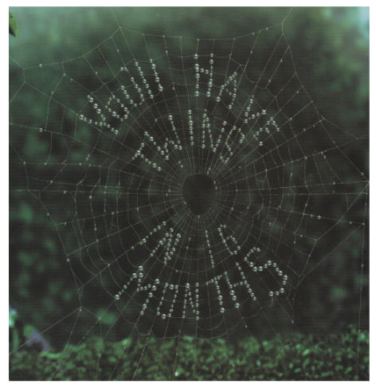

You'll Have Twins!
If you saw a message in a spider web, would you think it was the result of chance?
|
We found this photograph of a spider web, upon which dew drops spell out the message, "You'll Have Twins in 16 Months", in a full-page advertisement for Mass Mutual. The tag line in that ad was, "You can't predict. You can prepare." They wanted to make the point that they "have innovative products for whatever life may throw your way, from life insurance to disability income insurance, as well as investments from our affiliate OppenheimerFunds, Inc." Now, having given them what we feel is a satisfactory plug, we hope that Mass Mutual won't mind too much that we are using their photograph without permission.
|

|
Fake or Real?
Please examine the photograph closely and decide for yourself if you think the photograph is fake or real. We are betting that you'll think that some form of trick photography was involved. You probably don't believe that a photographer just happened to stumble upon this spider web containing this remarkable pattern of dew drops. You unconsciously can recognize the difference between a random pattern and intelligent design. Our goal in this essay is to make you consciously aware of how to tell design from chance.
The Devil's Advocate
Let's play the devil's advocate and try to argue that the photograph is real, and that the message appeared by chance formation of dew drops on the web.
The first point the devil would make in his argument is that dew drops do occur naturally on spider webs. Even I, having lived in the dry Mojave Desert for decades, have seen spider webs with dew drops on them. No doubt you have seen webs with dew drops on them, too. You don't need a long scientific explanation about how condensation works. You know that there is nothing supernatural about the formation of dew drops. The devil is on good, solid ground when he says that the formation of dew is a natural process.
The second point the devil would make is that whenever multiple drops appear on a web, they must form some sort of pattern. The pattern might be random, or it might be geometric. If it is geometric, the drops might appear as concentric rings on the circular strands of silk, or as straight lines on the radial strands of silk. Looking at the picture, we can see that the dew drops have formed mainly on the circular and radial strands. Granted, there are a few "wild" strands (in the Y, A, V, W, and Ns), but we all know that spider webs aren't perfectly symmetrical. There are occasional strands that run different directions on many (perhaps even most) spider webs. So, the placement of the silk strands in the web is consistent with unguided natural law. (At this point, the devil hopes that you don't realize that the web was constructed for a purpose by a spider, so there was some intelligent design involved in the construction of the web. But let's not go there.)
The devil's third point is that there are many spider webs in the world. Just in my garage alone ... (well, let's not go there, either  ). This is important because very large numbers affect probability. It is unlikely that if you flip 100 coins all will come up "heads." But, if you flip 100 coins enough times, probability theory says that sooner or later it will happen. (The safe bet is "later.") Granted, the probability that you will find a spider web with dew drops forming letters is small, but there are so many spider webs that somewhere, sometime, a web just like the one in the picture will form. So, it is theoretically possible that the photographer actually stumbled upon this web, which formed by pure chance, and took a picture of it.
). This is important because very large numbers affect probability. It is unlikely that if you flip 100 coins all will come up "heads." But, if you flip 100 coins enough times, probability theory says that sooner or later it will happen. (The safe bet is "later.") Granted, the probability that you will find a spider web with dew drops forming letters is small, but there are so many spider webs that somewhere, sometime, a web just like the one in the picture will form. So, it is theoretically possible that the photographer actually stumbled upon this web, which formed by pure chance, and took a picture of it.
The devil would conclude that since it is possible for this pattern of dew drops to have formed naturally, the "scientific" explanation is that it did happen through purely natural processes which had no purpose or goal in mind. No intelligence had to have been involved in the creation of this message.
Refuting the Devil
How would you refute the devil's argument? You know that the message on the spider web didn't happen by chance, but could you prove it? Dew drops do form on webs and make patterns. How do you prove that this pattern didn't form by chance?
Probability
You could do the math, and compute the tiny probability that dew drops would form the letter Y. Then you could do the math and compute the tiny probability that the letter O would form. The probability that the combination "Yo" would form by accident is the product of these two very small probabilities, which is really, really small. You could continue doing the math, computing the probability that all 24 letters, plus the apostrophe, would form by accident in this sequence. Then you could compute how long it would take for this sequence to happen by chance if 100 million spider webs formed every second, and the expected time might turn out to be billions of years.
But that doesn't prove it didn't happen by chance. It merely shows that it is very, very, very unlikely that it happened by chance.
The same reasoning applies to the formation of organic molecules such as proteins, DNA, etc. Several creationists have calculated the probability that molecules would combine in exactly the right way to form the organic molecules necessary for life. The probability is so small that it has been compared to the probability that a tornado in a junkyard would build an airplane, or finding the winning lottery ticket on the street every day for hundreds of years, or finding a randomly selected electron somewhere in the known universe.
The calculation of the probability that organic molecules could form by chance depends upon a lot of assumptions. People make different reasonable assumptions, and get different numerical values. But no matter what assumptions they make, or what number they compute, the bottom line is that the probability that organic molecules formed by chance is really, really, really, really, really, really, really small. So, the conclusion that is most likely to be correct is that it didn't happen by chance.
The only reason we have ever heard an evolutionist give for believing that organic molecules could form by chance is that although the probability is very small, the only alternative is that a supernatural power intentionally did it; and the probability of the existence of a supernatural power is even smaller. Since their religious beliefs don't allow for the possibility of miracles, or a higher power, or anything like that, their religious beliefs force them to the conclusion that organic molecules formed by chance, no matter how small the probability is. In America, they have every right to believe that. On the other hand, we have the right to point out that claims that organic molecules formed by chance do not have a good scientific basis.
Decay
The statistical argument depends upon lots of time. Sooner or later (probably much later) the argument goes, the right pattern of dew drops will appear randomly on the spider web.
But the thermodynamic argument is that sooner or later (probably much sooner) the web will fall apart. The web probably isn't going to last long enough for the dew drops to form in this precise pattern. Even if they do, the drops probably won't last long enough for the photographer to discover the web, set up his equipment, and take the picture.
Time works in favor of probability, but against duration. Every living thing dies, sooner or later. Time is the enemy of life.
Organic molecules naturally break down into smaller molecules with lower energy states. This releases the heat stored in the complex organic molecule, and allows that heat to distribute itself more evenly throughout the universe. This law, the Second Law of Thermodynamics, is well known to scientists. So, not only is it improbable that simple organic molecules will randomly form the complex organic molecules necessary for life; it would take external energy to make them combine. Uncontrolled application of external energy would tend to break those complex molecules apart faster than it would put them together.
As compelling as the statistical and thermodynamic arguments are, the proof doesn't really lie with statistics and thermodynamics. The proof comes from information theory. You see, we aren't talking about a random sequence of letters. We are talking about information coded in a specified format.
Energy, Matter, and Information
Scientists used to think there were only two things in the universe--energy and matter. Then they discovered that energy and matter are sort of the same thing. Energy can be converted into matter, and vice versa. We could argue about whether or not energy and matter are actually two separate things, but let's not. Let's talk about information instead.
In recent years scientists have gradually discovered information. We could argue whether or not Claude Shannon was the first to recognize the fundamental nature of information, but let's not go off on that tangent, either. The point is that information is neither matter nor energy. A floppy disk full of information has no more matter or energy than a blank floppy. Yes, a floppy disk is made up of matter, and it takes energy to write information on a floppy disk, and it takes energy to read it back, but the information isn't made up of matter or energy. Information is something fundamentally different from matter or energy.
There is no known way to convert information into mass, or mass into information. Yes, we can use information to put drops of ink on a piece of paper, but the information doesn't become ink. The ink existed already. So, information is fundamentally different from the media upon which it is conveyed.
It is tempting to go off on a tangent, talking about how to measure information content, the need for a transmitter, transmission media, and receiver, etc., but let's stick to just the minimum amount of information we need to discuss the problem at hand.
Information, Please!
If someone who doesn't speak English saw this spider web, it would not attract any particular attention. Mass Mutual depended upon the fact that you would recognize that the spider web holds a message that has meaning, and that your natural curiosity would lead you to read the text at the bottom of the advertisement to find out what it means.
If the message had been in Spanish, French, German, Dutch, Portuguese, or any other western language that you don't understand, you still would have recognized that it was a message of some kind because you recognized the individual letters. Had the message been in Chinese or an Arabic script, you may or may not have recognized the dew drops as a medium for a message. Westerners have trouble telling Chinese characters from short random lines, and Arabic script looks like long scribbles to those who don't know the language.
Second, you recognized not only the individual letters, you recognized the individual words. You know the meaning attached to the groups of letters. If all the same letters had been on that web, but in a random order, you would not have understood the message. You might have marveled that the dew drops formed so many recognizable letters, but that's all.
Third, the words fit a valid grammatical sequence. There is a subject, a verb, an object of the verb, and a prepositional phrase. If the web had spelled out, "16 in you'll twins have months", you would not have known what to make of it because the words aren't in a valid grammatical sequence. In other words, the message on the spider web is syntactically correct.
Fourth, the words make sense. If the web had spelled out "You'll have months in 16 twins," it would not have made sense, even though its syntax is correct. It still has a subject, verb, object, and prepositional phrase, so Microsoft Word's grammar checker does not underline it with a wavy green line. The words are all spelled correctly, so Word doesn't underline any of the words in red. But even though the words are spelled correctly, and they fit a prescribed grammatical sequence, "You'll have months in 16 twins" fails the semantics test. The phrase has no meaning.
But the most striking aspect of the message is the amount of information it contains. Suppose the spider web had said, "The ball is red." That message is spelled correctly, is grammatically correct, and makes sense. It just doesn't contain much useful information. The prediction, "You'll have twins in 16 months", had to have come from a supernatural source (if the prediction comes true). Predicting the birth of a child in less than nine months is possible by someone who knows about cause and effect, and gestation periods. Predicting the birth of a child more than nine months in advance requires more information than normal human beings have. Furthermore, the birth of twins is less frequent (in humans) than the birth of one child at a time. Since (as Shannon proved) the information in a message is inversely proportional to its probability, there is more information in the prediction of twins than the prediction of a single birth.
Design or Chance in Life
With all this background analysis of an amusing photograph behind us, let's apply the principles we have learned to a more important question. "How can we tell if life is the result of chance or design?"
First, the devil correctly argued that dew drops form naturally on spider webs. Second, the devil argued that the dew drops had to form some sort of pattern. In the same way, evolutionists argue that chemicals do (under certain conditions) naturally react with each other and form organic compounds. The difference is that we can put a spider web in a warm, moist environment, then cool it down and observe that dew drops form in a pattern. Evolutionists can't point to any experiment that replicates plausible conditions that may have existed at any time on Earth that produces all the organic compounds required for life at once.
The devil's third argument was that, given enough time and enough spider webs, eventually the dew drops on one of them would form the message. Similarly, the evolutionists argue that, given enough time and enough primeval soup, eventually the right organic compounds would form. The evolutionists are on shakier ground here because the amount of time required to hit just the right combination is more than they have, even if the universe is 20 billion years old. Furthermore, every dead animal at the side of the road gives experimental evidence that the organic compounds needed for life break down more rapidly than they could ever form naturally. A dead rabbit at the side of the road has a tremendous head start on any collection of chemicals that evolutionists might assemble, but the organic chemicals in the dead rabbit don't come to life all by themselves, and soon decay back to simpler chemical forms.
Still, the evolutionists argue that given enough time, and enough luck, the right conditions will occur accidentally, even though the right conditions can't be produced intentionally in the laboratory. But since one can't prove absolutely that an incredibly unlikely thing won't happen, they cling to the idea that the right chemicals came together at just the right time in some miraculous (but not supernatural!) way to form life.
But life is more complicated than "You'll have twins in 16 months." The DNA molecule needs an alphabet to spell out its message. The letters have to be arranged in the proper groups to produce proteins. There has to be something that knows how to read the message to know what proteins to produce. The proteins have to produce cells with complex internal and external interactions.
To think that all the DNA molecules that make people and plants, insects and sea shells, acquired all that information naturally, by accident, is as ridiculous and unscientific as thinking that dew drops on spider webs could describe the shape and function of every living creature on Earth.
It is obvious that the picture of the spider web is the result of some clever photographic manipulation, not an actual picture of dew on a spider web that formed naturally. It is obvious because (1) it is improbable, (2) it is too fragile to last long enough to be photographed, and most importantly, (3) it contains information coded in a specific format (the English language).
The same reasoning applies to DNA. DNA cannot be the result of an unguided natural process because (1) it is improbable that the necessary organic molecules would form naturally, (2) the organic molecules are too fragile to last long enough to form living cells, and (3) the DNA molecule contains an incredible amount of information coded in a format that can only be read by specific biological machines inside cells (or very elaborate modern laboratory techniques).
It is unscientific to think that the spider web spelled a message predicting twins by chance. It is even more unscientific to think that chance could produce the DNA molecules in those twins.